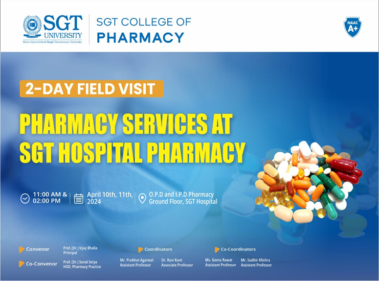
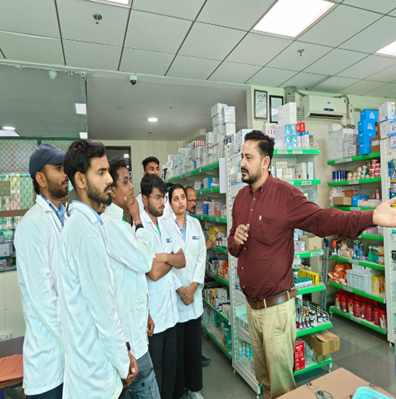
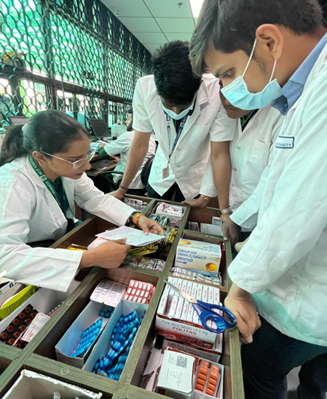
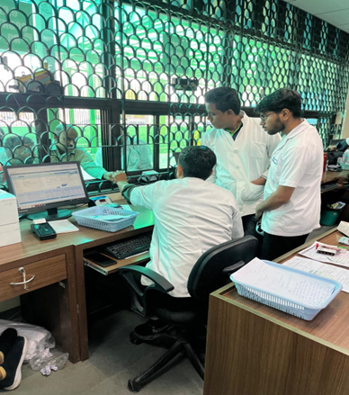
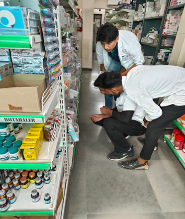
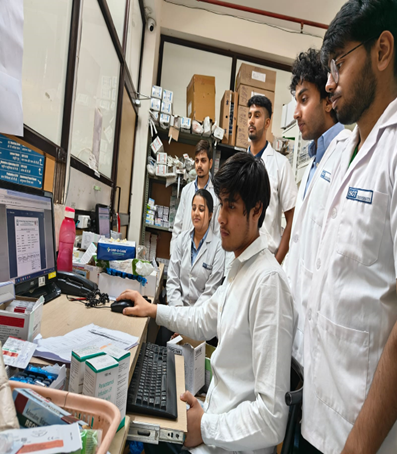
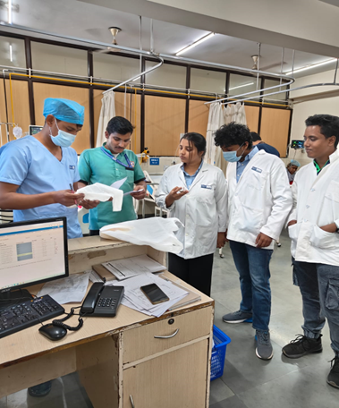
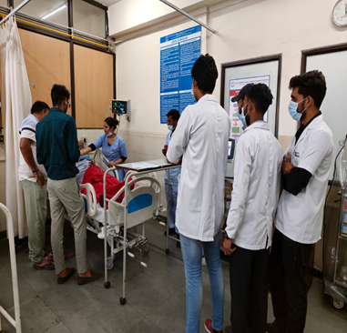
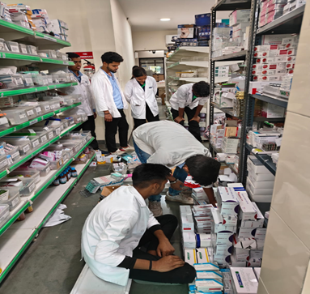
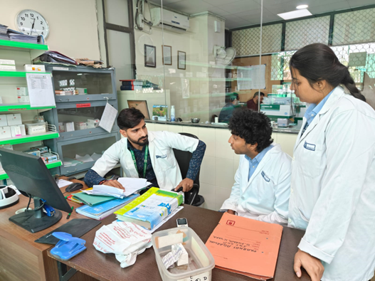

2 DAY FIELD VISIT for PHARMACY SERVICES at “SGT HOSPITAL PHARMACY”
E Brochure-

Organizers:
Name of the Demonstrator(s):
Mr. Sanjay Joshi (Chief Pharmacist, SGT Hospital, Gurugram) and Mr. Chetan Sharma (In-charge of Pharmacy, SGT Hospital, Gurugram).
Organizers:
SGT College of Pharmacy in collaboration with SGT Hospital, Gurugram
Convener:
Prof. (Dr.) Vijay Bhalla, Dean, SGT College of Pharmacy
Co-Convener:
Prof. (Dr.) Sonal Setya, HOD, Pharmacy Practice, SGT College of Pharmacy
Coordinator(s):
Mr. Prabhat Agarwal and Dr. Ravi Kant, SGT College of Pharmacy.
Co-Coordinator(s):
Mr. Sudhir Kumar Mishra and Ms. Geeta Rawat, SGT College of Pharmacy.
Report of the Workshop
Introduction:
SGT College of Pharmacy in collaboration with SGT Hospital, Gurugram organized 2-day field visit on “PHARMACY SERVICES AT SGT HOSPITAL PHARMACY” at SGT Hospital, Gurugram. It was held on 10th and 11th March 2024 at OPD and IPD pharmacy situated at ground floor, SGT Hospital, Gurugram. Timings were 11 AM to 1 PM and 2 PM to 4 PM on each day of event.
Objective of the Workshop:
The main aim of this event is to familiarize and to give exposure to students by giving them hands on training about various pharmacy services operated at any health care centre. Other aspect of this field visit was to unlock their potential and knowledge about hospital and clinical pharmacy, what they have learnt through out academic year in classroom. Also to gain insight about how to interact with patient as a pharmacist.
Brief content of event:
This event was divided into 4 sessions for 2 days, 2 sessions per day at both OPD and IPD pharmacy. This event was curated for emphasizing the students to understand the duties of the hospital clinical pharmacists. Students gained insights of following areas related to pharmacy services:
Overview of OPD pharmacy
How to read prescription
Dispensing of medicine according to prescription and interaction with patients.
Order receiving and dispensing of medicines at IPD pharmacy
Distribution of drugs in wards from IPD pharmacy.
Administration of medicines to IPD patients.
Inventory Control and Management including storage of medicines according to instructions mention on label of medicines
Broad knowledge about schedule H1, NDPS medicines.
Upkeeping of pharmacy which includes housekeeping, location of fire extinguishers, access of control, pest control etc.
The students of D. Pharm II year of SGT college of pharmacy and few faculty members attended event with full zeal and enthusiasm.
Photos of the Event









List of Participants
S. No. Registration No. Name
1 221427001 ANISH MANDAL
2 221427002 HITENDRA NIGAM
3 221427003 SYED ABDUL HALIM AKHTAR
4 221427005 HARSH KUMAR
5 221427006 HIMANSHU SHEORAN
6 221427007 CHANDAN KUMAR DUBEY
7 221427009 BRIJESH PANDEY
8 221427010 PIYUSH JHA
9 221427012 SURENDRA SINGH
10 221427013 MUSKAN JHA
11 221427014 DHIRAJ KUMAR SAH
12 221427015 ASHU
13 221427016 AAKASH YADAV
14 221427017 NITIN HANS
15 221427018 SHUBHAM SAINI
16 221427019 AMIT
17 221427020 PRAVEEN KUMAR
18 221427021 AMBANI YADAV
19 221427023 MANISH KUMAR
20 221427024 SAHIL
21 221427025 ADITYA TYAGI
22 221427026 SHAHZAD
23 221427027 ANURAG DUDI
24 221427029 DEEPANSHU MALIK
25 221427030 SWYAM GUPTA
26 221427031 YAMAN
27 221427034 ANISH KUMAR
28 221427036 CHANDAN GUPTA
29 221427037 BIRENDRA KUMAR
30 221427043 GAURAV KUMAR
31 221427044 SHIVANI NOHWAR
32 221427045 SUMER SINGH MEENA
33 221427046 JASMAN SINGH
34 221427047 BHUPENDER
35 221427048 DEEPANSHU ARYA
36 221427049 NIDHI
37 221427050 MAYANK
38 221427051 TANISH
39 221427052 CHANDAN JAISWAL
40 221427054 GULSHAN VERMA
41 221427056 RISHAB YADAV
42 211427044 RASHMI